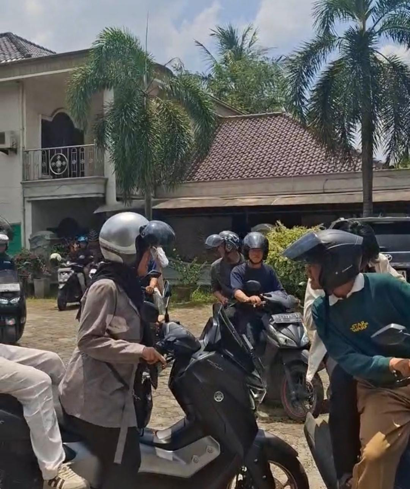

Galeri Kegiatan
 Bakar - bakar
Bakar - bakar
Ngemall

Motoran
Komputer adalah Sahabat Kami
Ketua Kelas
Wakil Ketua
Sekretaris
Kelas L3 Informatika 2025 adalah rumah kedua bagi setiap anggotanya. Dengan semangat kebersamaan, kami terus belajar, berkolaborasi, dan tumbuh bersama untuk mencapai masa depan yang lebih baik.
| Hari | Mata Kuliah | Waktu |
|---|---|---|
| Senin | Pengantar Algoritma & Struktur Data, Pemrograman Komputer | 08.00 - 10.30 & 10.35 - 13.30 |
| Rabu | Pancasila & Pengantar Teknologi Informasi | 08.00 - 09.50 & 10.30 - 13.30 |
| Kamis | Agama & Matriks Vektor | 09.50 - 11.50 & 13.40 - 16.00 |
| Jumat | Kalkulus & Praktikum Pemrograman Komputer | 08.00 - 10.30 & 14.00 - 16.00 |
Bakar - bakar
"Kebersamaan adalah energi kita."